Capital Structure
REM1 — Session 4 of 6
Professor Thies Lindenthal
htl24@cam.ac.uk
https://lindenthal.eu
September 2026
## Gearing at the Asset Level<span class="subtitle"><br>What does debt do to this property’s return and risk?</span> * Two identical buildings, different capital structure → different owner outcomes * This half: the mechanics of leverage, on a single asset * Second half: same question, one level up—how much debt should the <em>company</em> carry?
## From NOI to Equity Cash Flow<span class="subtitle"><br>The debt waterfall</span> * Net Operating Income (NOI) - − Debt Service (interest + scheduled principal) - = Equity Before-Tax Cash Flow (EBTCF) * Debt is paid first, contractually, regardless of how the year went * Equity gets the residual—all of the upside, and all of the downside, below that line
## Three Ratios Lenders (and You) Should Watch<span class="subtitle"><br>LTV, DSCR, ICR</span> * <strong>Loan-to-Value (LTV)</strong> = Debt / Property Value - How much cushion before the lender’s collateral is at risk? * <strong>Debt Service Coverage Ratio (DSCR)</strong> = NOI / Debt Service - Can income cover the <em>full</em> payment—interest and scheduled principal? Lenders typically want >1.2–1.3 * <strong>Interest Coverage Ratio (ICR)</strong> = NOI / Interest - Can income cover just the interest? Looser than DSCR—ignores amortisation
## r<sub>E</sub> and Leverage<span class="subtitle"><br>The basic identity, no taxes</span> * $r_E = r_P + \frac{D}{E}(r_P - r_D)$ - $r_P$ = unlevered return on the property - $r_D$ = cost of debt - $D/E$ = gearing ratio * With taxes: $r_E = r_P + \frac{D}{E}(1-t_c)(r_P-r_D)$ * Extension: cost of financial distress increases $r_E$ further (Modigliani & Miller offer no formula for this—more on that in Half 2)
## Positive vs Negative Leverage<span class="subtitle"><br>Same algebra, opposite direction</span> * If $r_P > r_D$: leverage is <strong>positive</strong>—debt amplifies the equity return above the property return * If $r_P < r_D$: leverage is <strong>negative</strong>—debt drags the equity return below the property return * The spread $(r_P - r_D)$, multiplied by $D/E$, is doing all the work * Gearing is not free extra return: it’s a bet that $r_P > r_D$ will hold—amplified
## Risk Scales by the Same Factor<span class="subtitle"><br>So the Sharpe ratio doesn’t improve</span> * Leverage doesn’t just amplify expected return—it amplifies risk ($\sigma$) by (roughly) the same factor * $\sigma_E \approx (1+D/E)\, \sigma_P$ (no-tax case, ignoring the debt’s own risk) * Reward per unit of risk is (roughly) unchanged: $\frac{r_E - r_f}{\sigma_E} \approx \frac{r_P - r_f}{\sigma_P}$ * Leverage moves you along the same risk/return line (Session 2)—it doesn’t create free alpha
## Refinancing & Covenant Risk<span class="subtitle"><br>The leverage story isn’t just about the coupon</span> * Maturity mismatch: short-term debt, long-lived asset → you must refinance during the hold * Refinancing risk: will a new loan be available on acceptable terms when the old one matures? * Covenants: LTV and DSCR triggers can force asset sales, cash sweeps, or equity top-ups—even without an outright default * How debt is <em>structured</em>, not just how much of it there is, determines whether a downturn is survivable (preview: EOP/Blackstone, coming up)
## UK: New CRE debt<span class="subtitle"><br>Supply and demand not constant. Also, mix of lenders changed.</span> <div class="figure"> <p class="title">CRE Loan Originations, UK, by Lender Type (£ bn), 1999–H1 2024</p> <p>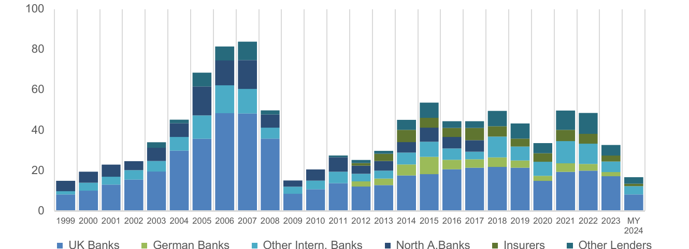</p> <p class="source">Source: <a href="https://openaccess.city.ac.uk/id/eprint/34892/1/CRE%20Lending%20Report%20Media%20copy%20MY2024%20%281%29.pdf">Bayes Commercial Real Estate Lending Report MY 2024</a>, Fig. 4. Last bar is H1 2024 only (full-year 2024: £36.3bn). Insurers not separately identified before 2012.</p> </div> * Update, 2025 (<a href="https://www.citystgeorges.ac.uk/news-and-events/news/2026/may/sluggish-investment-in-uk-commercial-real-estate-market-sparks-price-war-for-refinancing-loans">Bayes YE 2025</a>): new lending up 29% to £52.7bn, highest in a decade; ~60% refinancing; debt funds’ market share up from 12% to 28%; £33bn matures in 2026—this is the refinancing market your loan will hit at maturity
## Cost of debt increased<span class="subtitle"><br>Cost of debt larger than yields? Is that possible?</span> <div class="figure"> <p class="title">Borrowers’ costs and property yields, % June 2013–June 2024</p> <p>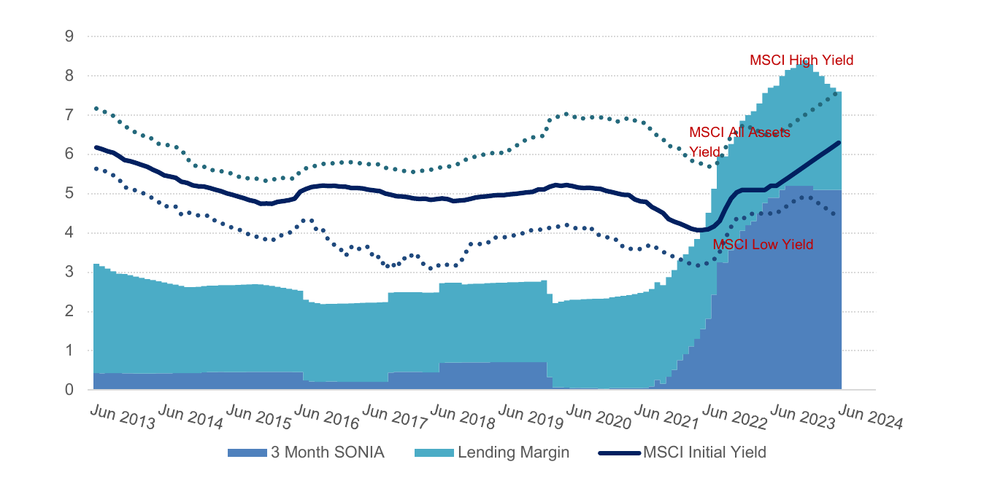</p> <p class="source">Source: <a href="https://openaccess.city.ac.uk/id/eprint/34892/1/CRE%20Lending%20Report%20Media%20copy%20MY2024%20%281%29.pdf">Bayes Commercial Real Estate Lending Report MY 2024</a>, Fig. 27</p> </div> * 2025: rates easing and a refinancing “price war”—UK banks cut prime office margins by 45bps, debt funds by 30bps. But stress remains: default rate 3.8% (long-run average 3%), and 13% of loans have interest cover below 1×
## Back to the Manhattan Office<span class="subtitle"><br>Same property Session 1 valued—now with leverage</span> * Recap: `$`80,000,000 purchase, Year 1 NOI `$`5,497,750, 2% annual NOI growth, exit Year 7 at a 6.5% exit cap rate * Session 1 asked: what’s this worth, unlevered? * Now: what happens to the equity investor’s return once we add a `$`60,000,000 loan (75% LTV, 4.5% fixed, 30-year amortisation)?
## Unlevered Property IRR<span class="subtitle"><br>The return before any financing decision</span> * Cash flows: Year 1–6 NOI, Year 7 NOI + sale proceeds (`$`97,926,693), against the full `$`80,000,000 purchase price * Unlevered property IRR ≈ <strong>9.6%</strong> * This is $r_P$—the number leverage is about to amplify
## Adding the Loan<span class="subtitle"><br>LTV, DSCR and ICR for this deal</span> * LTV = `$`60,000,000 / `$`80,000,000 = 75% * Year 1 DSCR = `$`5,497,750 / `$`3,640,416 = 1.51 * Year 1 ICR ≈ `$`5,497,750 / `$`2,700,000 (interest only) ≈ 2.0 * Equity Before-Tax Cash Flow each year = NOI − `$`3,640,416 debt service
## Levered Equity IRR<span class="subtitle"><br>Sitting on top of the property IRR</span> * At exit: sale proceeds `$`97,926,693, minus remaining mortgage `$`54,522,634 = `$`43,404,059 to equity * Equity invested at close: `$`20,000,000 (25% down) * Levered equity IRR ≈ <strong>19.7%</strong>—roughly double the 9.6% property IRR * Positive leverage at work: $r_P$ (9.6%) $>$ $r_D$ (4.5%), amplified by D/E = 3
## Why Doesn’t the Simple Formula Match Exactly?<span class="subtitle"><br>Amortisation quietly delevers the deal</span> * Plugging $r_P=9.6\%$, $r_D=4.5\%$, $D/E=3$ into $r_E=r_P+\frac{D}{E}(r_P-r_D)$ predicts ≈25%—well above the 19.7% IRR * The static formula assumes constant leverage; this loan amortises, so $D/E$ shrinks every year of the hold * Lesson: the simple leverage algebra is a single-period approximation. Multi-year IRRs need the full cash flow schedule.
## Scott vs. Shackleton <span class="subtitle"><br>Race for South Pole: Disaster or survival?</span> <p class="source">The crew of the “Endurance”, Ernest Shackleton’s expedition ship, after getting stuck in Antarctic ice. The expedition itself did not reach its goal - but all men were saved. Their survival is the really interesting part of their story (for more, visit Cambridge’s Polar Institute Museum).</p>
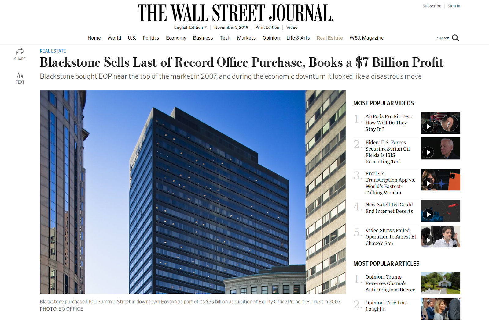
## Blackstone’s bumpy ride <span class="subtitle"><br>“Equity Office Properties” - One of the largest property deal ever.</span> * Imagine buying `$`39 billion worth of offices, at the top of the market - 513 buildings - 100 million sqft. - At purchase, portfolio was trading at discount to Net Asset Value (NAV): below the value of its properties net of debt (more on NAV later) * Highly leveraged investment in 2007 - 82% debt (long term, from Bear Stearns, Bank of America, Goldman Sachs) - `$`3.5bn own capital - remainder equity bridge capital * Back of an envelope return estimate: (7 bn/3.5 bn)<sup>1/12</sup>- 1 = 5.9% - Is that a good return on their investment?
## EOP equity wiped out in 2010?<span class="subtitle"><br>No more equity in “Equity Office Properties”?</span> * NCREIF direct property index - Scaled to 2007Q2, date of Purchase = 100% (vertical dotted line) - Debt level of 82% represented by horizontal dotted line <p>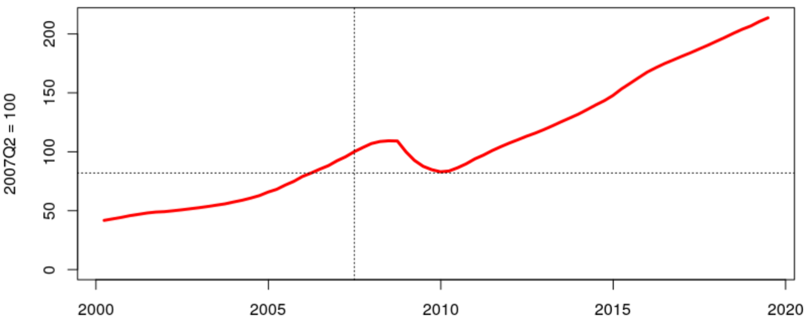</p>
## Avoiding disaster <span class="subtitle"><br>How did they return from brink of bankruptcy?</span> * Blackstone was able to structure its debt - Covenants carefully negotiated when debt was sourced: The firm didn’t face sudden large payments if the market moved against it. * Sufficiently large cash reserves - Repurchase debt during the economic slowdown, when raising new capital wasn’t easy. - During crisis Blackstone purchased more than `$`1 billion in Equity Office debt at a discount to help shore up that company’s balance sheet.<br><br> * <em>“They had credibility with the lenders because they were prepared not just to demand concessions but also put up capital.”</em> — Roy March, CEO Eastdil Secured
## Same Algebra, Run Backwards<span class="subtitle"><br>The hinge: from asset-level gearing to entity-level capital structure</span> * Half 1 geared a property return up to an equity return—and EOP survived because Blackstone controlled the D/E and how the debt was structured * Now formalise it: if you only observe a <em>levered</em> return, can you recover the unlevered one? * Degear REIT return (fictional example) - We observe a REIT return of 12% annualised - Typical leverage is 33.3%, cost of debt = 5% - What is the unlevered property return $r_P$? - $r_E = r_P + \frac{D}{E}(r_P-r_D)$ - $ 12 = r_P + \frac{1}{2}(r_P-5)$ - $ 24 = 2r_P + (r_P-5) = 3r_P - 5$ - $ 29 = 3r_P$ - $ r_P = \frac{29}{3} = 9.67$ * Exactly the question Half 2 needs answered: how much of a REIT’s return—and risk—is the property, and how much is management’s leverage decision?
Break
10 minutes
## Capital Structure at the Entity Level<span class="subtitle"><br>How much debt should the company carry?</span> * Same question as Half 1—asked one level up * Now: cash flows, taxes, and distress costs at the level of the whole firm, not one asset * And: why do REITs—which pay no corporate tax—borrow at all, and why does their leverage move so much? Note: OK, welcome back. In the first half we looked at one building. What does debt do to the returns and the risk of the equity in a single property? And we saw that it cranks up both. We also saw that how you structure the debt can decide whether you make it through a downturn. That was the Blackstone story. Now we go one level up. The question isn't how much debt to put on this building. It's how much debt the whole company should carry. So now we're thinking about cash flows, taxes and distress costs for the firm as a whole. And here's a puzzle I'd like you to keep in the back of your mind. REITs don't pay corporate tax. And as you'll see in a minute, the standard textbook argument for debt is all about tax. So why do REITs borrow at all? And why does their leverage jump around so much? By the end of today we'll have a few candidate answers.
## Formalising Cap. Structure <span class="subtitle"><br>Modigliani & Miller: Value as a function of leverage</span> 1. The firm as a pizza: $V_L = V_U = D + E$ - The value of the firm is the value of its projects - Capital structure just distributes this amongst stakeholders - Shareholders can make their own gearing decisions 2. Tax shields: $V_L = V_U + T_C D$ - Debt interest payments tax deductible - Reduces government’s take/stake in the firm - More funds left for shareholders 3. Extension: Cost of financial distress depress value. Note: Everything about capital structure starts with Modigliani and Miller. Their first idea is usually explained with a pizza. The firm is worth whatever its projects are worth. For us, that's the buildings. How you slice that between debt and equity doesn't make the pizza any bigger. So in a world with no taxes and no frictions, capital structure simply doesn't matter. And if shareholders want more gearing, they can just borrow themselves. Then they add corporate tax. Interest is tax deductible, so debt shrinks the government's slice of the pizza. There's more left over for the people who put up the money. So the value of the levered firm is the unlevered value, plus the tax rate times the debt. Now, take that literally and it says: borrow as much as you can. Nobody does that. And that's the third point on the slide. Financial distress is expensive, and it drags value back down. Modigliani and Miller don't give us a formula for that, but it's going to matter a lot for the rest of today.
## Example <span class="subtitle"><br>The case for gearing</span> * The tax deductibility of interest payments increases the total income that can be paid out to capital providers * Numerical example, assuming corporate taxes of 35% <p>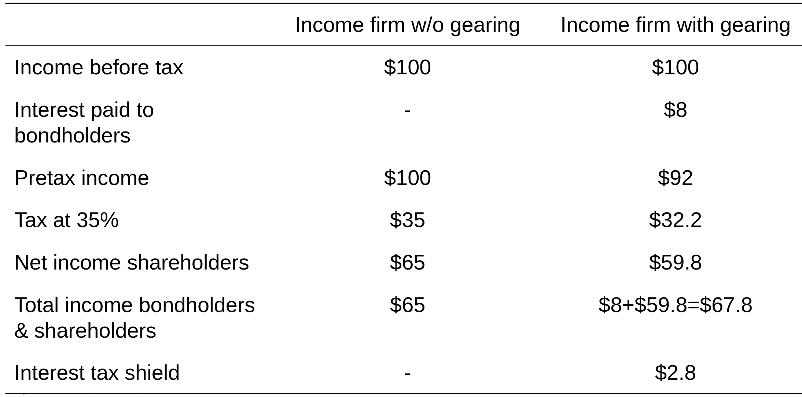</p> Note: Let's put some numbers on the tax argument. Two firms, exactly the same business. Each earns 100 before interest and tax, and the tax rate is 35 percent. The first firm has no debt. It pays 35 in tax, and 65 goes to the shareholders. So everyone who put money in gets 65 in total. The second firm has some debt and pays 8 in interest. Now taxable income is only 92, so the tax bill drops to 32.2. Shareholders get 59.8. That's less than before, but the bondholders get their 8 on top. Add it up and investors get 67.8. So where does the extra 2.8 come from? It's the tax shield: 8 of interest, times 35 percent. The business is exactly the same. The only thing that's changed is that the taxman gets a smaller cut. That's the whole case for gearing, in one table.
## Value of Tax Shield <span class="subtitle"><br></span> * Interest payment = return on debt × amount borrowed = r<sub>d</sub> D * Annual tax shield = interest × tax rate = r<sub>d</sub> D × t<sub>c</sub> * PV(tax shield) = annual tax shield, capitalised = r<sub>d</sub> D × t<sub>c</sub> / r<sub>d</sub> = D × t<sub>c</sub> * In previous example - PV(tax shield) = `$`2.8 / r<sub>d</sub> - Assuming r<sub>d</sub> of 8%, the PV of tax shield will be `$`35. * Check: Why use cost of debt and not WACC as dicount rate for tax shield? Note: So how much is that tax shield worth? Each year you pay the cost of debt times the amount you borrowed. Your tax saving is that interest times the tax rate. Now, if the debt's permanent, you can value that saving as a perpetuity at the cost of debt. The cost of debt cancels out, and you're left with something really simple: the debt times the tax rate. In our example, the shield was 2.8 a year. With an 8 percent cost of debt, that's worth 35 today. Which is exactly 100 of debt times 35 percent. Not a coincidence. Here's one to think about. Why do we discount the tax shield at the cost of debt, and not at the WACC? Basically, the tax saving is only as safe as the interest payments behind it. If the interest gets paid, you get the shield. So it's about as risky as the debt.
## A Trade-off<span class="subtitle"><br>First theory (we will see more later)</span> * Starting point for corporate finance approach to capital structure * Firms can use debt to reduce tax bill - Interest payments act as tax shield * Leverage increases risk of financial distress and, hence, cost of financial distress - Bankruptcy costs and trading disruption * Capital structure will balance these two factors * Complications - Corporate Taxes versus Personal/Shareholder Taxes - Structure of Firms – e.g. REITs Note: And that gets us to our first proper theory of capital structure: the trade-off theory. On one side, debt cuts your tax bill, because of the tax shield. On the other side, more debt means a higher chance of getting into financial trouble. And that's expensive. It's not just the bankruptcy costs. The business starts to suffer long before any default. Tenants get nervous, maintenance gets put off, good people leave. The best capital structure is where those two forces balance out. Of course, it's messier in real life. Investors pay personal taxes on interest and dividends too, which can eat into the corporate tax advantage. And the type of firm matters. REITs are the obvious example for us, and we'll get to them soon.
## Trade-off theory <span class="subtitle"><br>Tax effects and financial distress costs</span> <div class="figure"> <p>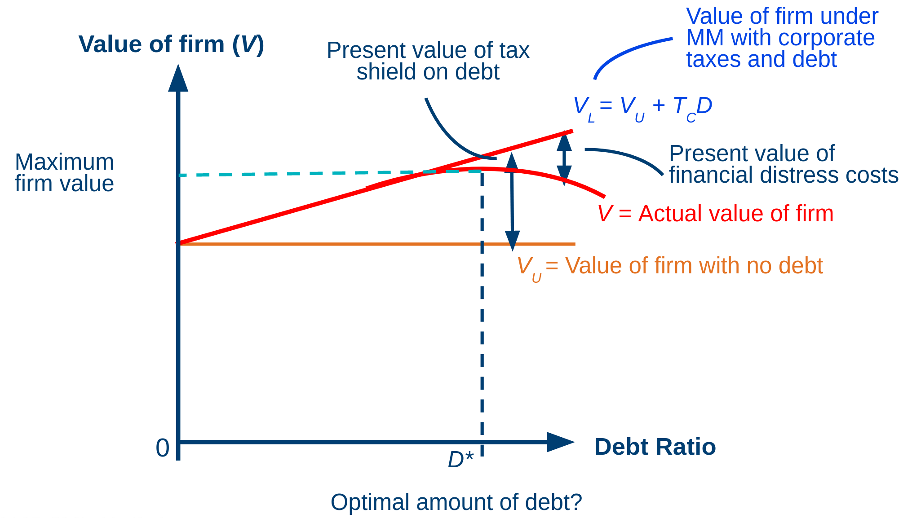</p> </div> Note: Here's the trade-off in one picture. Debt ratio along the bottom, value of the firm up the side. The flat orange line is what the firm's worth with no debt. The straight line going up is Modigliani and Miller with taxes. Every extra bit of debt adds tax shield, so value just keeps climbing. But the real value of the firm is the curved red line, and it peels away from that. With a bit of debt, trouble's unlikely, so the expected costs are small. Keep adding debt, though, and the distress costs grow faster and faster. At some point they outweigh the extra tax shield. The top of that curve, D-star, is the optimal amount of debt. In practice, nobody knows exactly where D-star is. But the logic tells you which way to go when taxes or distress costs change. And that's going to be really useful once we get to REITs.
Financial Distress
Intuition instead of formulas (M&M don’t offer any).
Value of firm
= Value of all-equity financed company
+ PV( Tax shield )
– PV( cost financial distress )
Financial distress
Costs of bankruptcy and financial distress
Agency costs in context of financial distress
## Agency costs <span class="subtitle"><br>Almost Bankrupt Ltd has the following balance sheet</span> <p>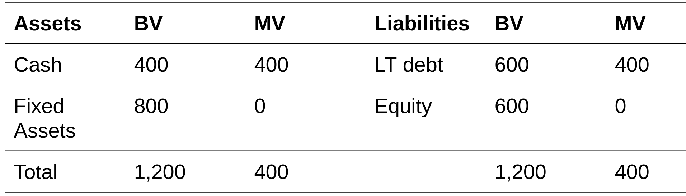</p> * If firm is liquidated today debt providers will get 400 and shareholders will get 0. Note: Meet Almost Bankrupt Limited. On paper, the balance sheet looks fine. 400 in cash, 800 in fixed assets, and it's funded with 600 of debt and 600 of equity. So 1,200 on each side, at book value. But look at market values. The fixed assets are now worth nothing. So really, the firm is worth 400. That's just the cash. The debt has a face value of 600, but it's only worth 400. And the equity's worth zero. If you wound the firm up today, the lenders would get 400 and the shareholders would get nothing. Hang on to that thought. The shareholders have nothing left to lose. And that completely changes how they behave.
## Equity vs debt <span class="subtitle"><br>Excessive risk-taking</span> * Firm could gamble all of its cash (400) and either win big or lose everything<br/> * Expected cash flow in one year is 0.1 × 2,000 + 0.9 × 0 = 200 * Assume a required return of 50% (yes, they are in distress!) * NPV = −400 + 200/1.5 = −267 * NPV is clear: Don’t do it! Note: Now, say the firm could take all its cash, the 400, and gamble it. There's a 10 percent chance of winning big, 2,000, and a 90 percent chance of losing the lot. The expected payoff is 10 percent of 2,000, so 200. This firm's in trouble, so let's use a 50 percent required return. 200 discounted at 50 percent is about 133. Take off the 400 you put in, and the NPV is minus 267. For the firm as a whole, that's a terrible idea. It destroys value. So who on earth would want to do it?
## Excessive risk-taking <span class="subtitle"><br>Conflict between debt and equity providers</span> * Financial positions of capital providers | | Direct liquidation | Expections with investment | |---|---:|---:| |CF Debt<sub>t=1</sub> | | 600 × 0.10 + 0 = 60 | |CF Equity<sub>t=1</sub> | | (2,000 – 600) × 0.10 + 0 = 140 | |PV debt<sub>t=0</sub>| 400 | 60/1.5 = 40 | |PV equity<sub>t=0</sub> | 0 | 140/1.5 = 93 | <br> * For shareholders, PV increases, so they will do it. Obviously, this is not in the interest of debt providers. Note: Let's split it up between the two groups. If the gamble works, the firm has 2,000. The lenders get their 600 and the shareholders keep the other 1,400. If it doesn't work, nobody gets anything. For the lenders, the expected payoff is 10 percent of 600. That's 60, worth 40 today. Compare that with the 400 they'd get if you shut the firm down now. They lose 360. For the shareholders, it's 10 percent of 1,400. That's 140, worth about 93 today. Compared with zero, they're up 93. So the shareholders would happily take a bet that destroys value, because it's really the lenders' money they're betting with. That's called risk shifting. And it's one big reason lenders care so much about covenants and control once a borrower gets into trouble.
## Underinvestment<span class="subtitle"><br>Another agency costs, again debt vs. equity.</span> * Now, consider a safe project that guarantees 700 in one period * Initial outlay is 600 (the firm only has 400 now) so the shareholders have to inject an additional 200 to finance the project - No additional debt feasible * Required return is 10% (safe project, but time value of money) * NPV= − 600 + 700/1.1 = 36.36 * NPV > 0! Accept. Note: And it can go the other way too. Same firm, same balance sheet. This time there's a safe project. Put in 600 today, and you're guaranteed 700 in a year. But the firm only has 400, and no one will lend it any more. So the shareholders would have to find the other 200 themselves. It's a safe project, so the required return is just the time value of money. Let's say 10 percent. The NPV is minus 600 plus 700 over 1.1, which is plus 36. Positive NPV. Any textbook would tell you to go for it.
## Underinvestment<span class="subtitle"><br>Debt overhang prevents a profitable project from going forward.</span> * Financial positions of capital providers | | direct liquidation | Expectations with investment | |---|----:|---:| |CF Debt<sub>t=1</sub> | | 600 | |CF Equity<sub>t=1</sub> | | 700−600 = 100 | |PV debt<sub>t=0</sub>| 400 | 600/1.1 = 545.45 | |PV equity<sub>t=0</sub> | 0 | −200 + 100/1.1 = −109.09 | <br> * Stockholders will not invest in positive NPV project. Note: But look at who actually gets the money. In a year, the project pays 700. The lenders are owed 600, and they get paid first. So the shareholders get what's left, which is 100. For the lenders, that's great. They go from 400 today to a guaranteed 600, worth about 545 today. For the shareholders, it's a rotten deal. They put in 200 now and get 100 back in a year, which is worth about 91 today. So they're down 109. So the shareholders say no to a project that creates value, because most of the gain just goes to paying off old debt. That's called debt overhang, and you see it in real estate all the time. Think of an office building with too much debt on it that needs a refurb to stay lettable. The owner may just refuse to put in fresh money, and the building slowly goes downhill.
## Agency cost <span class="subtitle"><br> Milking the assets: Equity vs debt </span> * Debt is only due in a year from now, let’s pay all remaining cash to shareholders before: 400 in dividends. - This leaves the firm insolvent, no funds left for debt providers. * Such a blatant enrichment would most likely be illegal, but you get the idea. - Debt providers can protect themselves via covenants, bond indentures, and active monitoring/due diligence * Agency conflict between management and capital providers - Managers delay liquidation and continue to pay their salaries, corporate perks, ... Note: And one more version. The debt isn't due for another year. So why not just pay all the cash, the 400, out to shareholders as a dividend today? The firm's left with nothing, and when the debt comes due, the lenders get nothing. Doing it that blatantly would normally be illegal. But milder versions do happen. That's why lenders protect themselves with covenants, limits on dividends, bond agreements, and by keeping a close eye on the borrower. And there's another conflict on top of that, between management and everyone who's put money in. Managers of a failing firm may drag their feet on winding it up, because they want to keep their salaries and perks. All of these costs go up as debt goes up. They're part of those distress costs in the trade-off picture.
## REITs <span class="subtitle"><br>Real Estate Investment Trusts: What’s special about them?</span> * REITs come in different flavours internationally. Focus here: US/UK REITs (leverage data below: US/Canadian). - REIT regulation in other countries can vary dramatically! Chinese or Brazilian REITs, for instance, are very different. * Tax-exempt status * Income must come from real estate * 90% of the company’s rental profit must be paid out to shareholders via dividends. * Diffused ownership: No controlling ownership stakes. * Question for the rest of the session:<br /><em>How will these characteristics affect capital structure of REITs?</em> Note: So let's bring all this back to real estate, and to REITs in particular: real estate investment trusts. REIT rules differ a lot from country to country, so I'll stick to the US and UK model. Four features matter here. One: REITs don't pay corporate tax, as long as they follow the rules. Two: their income has to come mainly from real estate. Three: they have to pay out most of their rental profit, 90 percent, as dividends. And four: ownership is spread out. No single shareholder has a controlling stake. So here's the question for the rest of today. How should each of those features affect how much debt a REIT takes on? And the tax exemption should ring a bell, given what we just said about tax shields.
## Applicable to REITs?<span class="subtitle"><br>History of leverage for US/Canadian REITs, 1990–2023</span> * Starting point: leverage levels entering the 1990s <div class="figure"> <p>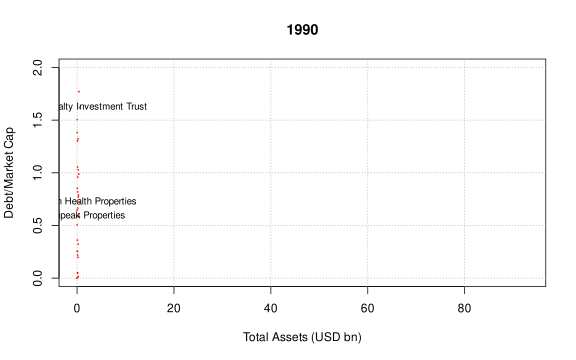</p> </div> Note: Before we get into theory, let's look at some data. These charts show US and Canadian REITs. Each dot is one REIT. Along the bottom, total assets, in billions of US dollars. Up the side, debt divided by market cap, so basically debt to equity at market values. Bigger dots are bigger companies, and the five largest have their names on. In 1990, the sector was tiny. Everything's squashed up against the left edge. Hardly any REIT had more than a few billion in assets. The modern REIT market really takes off in the early 90s, with a big wave of IPOs.
## Applicable to REITs?<span class="subtitle"><br>History of leverage for US/Canadian REITs, 1990–2023</span> * Pre-GFC boom: leverage builds up—gearing is not static <div class="figure"> <p>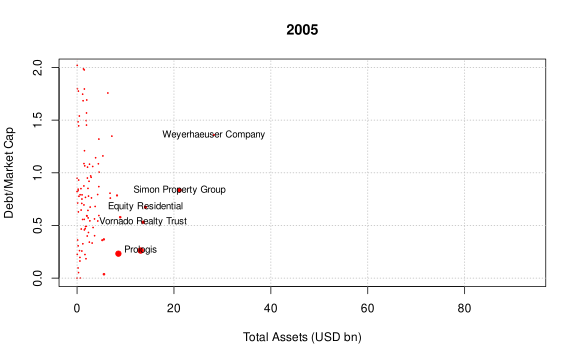</p> </div> Note: Jump ahead to 2005, right in the middle of the boom. The sector's grown massively. Names like Simon Property Group, Equity Residential and Vornado are now big companies. And leverage is all over the place. Some REITs have debt of more than one and a half times their market value. The main point: gearing doesn't stand still. It builds up during the boom.
## Applicable to REITs?<span class="subtitle"><br>History of leverage for US/Canadian REITs, 1990–2023</span> * Global Financial Crisis: leverage spikes as asset values fall faster than debt <div class="figure"> <p>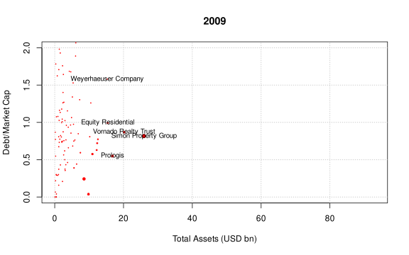</p> </div> Note: Now 2009, the financial crisis. See how the whole cloud of dots shifts up? Lots of REITs now have more debt than their equity is worth. Some of them a lot more. Part of that is just arithmetic. Share prices crashed, so equity values shrank much faster than the debt. Leverage at market values shoots up, even if nobody borrowed a single extra dollar. And that's exactly when refinancing gets hard and covenants start to bite. It's the same situation we saw with Equity Office in the first half.
## Applicable to REITs?<span class="subtitle"><br>History of leverage for US/Canadian REITs, 1990–2023</span> * Full series to 2023: REITs deleveraged materially post-GFC—but leverage is clearly not zero, and it moves over time. How can we explain this? <div class="figure"> <p>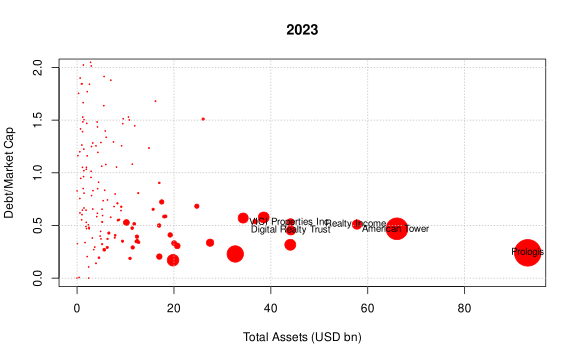</p> </div> Note: And here's the latest year, 2023. Things look really different now. There are some huge REITs: Prologis way over on the right, American Tower, and a few others. And the big ones sit at much lower leverage, with debt at about half their market value, or less. So REITs cut back their debt a lot after the crisis. But two things jump out. Leverage definitely isn't zero. And it moves around a lot over time. That's what we need to explain.
## Country differences<span class="subtitle"><br>Leverage not uniform internationally!</span> * Debt/asset for 10 largest REITs (equally weighted)<br> <p>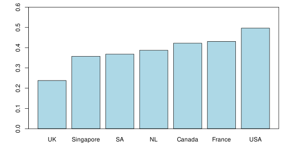</p> Note: Leverage also varies from country to country. This chart shows debt to assets for the ten biggest REITs in each country, equally weighted. UK REITs are at the low end, at about a quarter. The US is at the top, at about a half. And Singapore, South Africa, the Netherlands, Canada and France are somewhere in between. These countries have different REIT rules, different tax systems, different lending markets. So whatever theory we come up with, it needs room for those differences.
## The Tax-Exempt Twist<span class="subtitle"><br>Trade-off theory says REITs shouldn’t gear up much</span> * Trade-off theory’s whole case for debt is the tax shield—but REITs pay no corporate tax * No tax bill to shield → the tax-shield side of the trade-off is close to zero for REITs * What’s left is only the cost side: financial distress, covenant risk, loss of flexibility * Trade-off theory therefore predicts REITs should carry <em>little</em> debt Note: OK, let's apply the trade-off theory to REITs. The whole case for debt in that theory is the tax shield. But REITs don't pay corporate tax, so there's no tax bill to shield. The benefit side is basically zero. All you're left with is the cost side: the risk of financial trouble, covenants, and not having much room to manoeuvre if you have to refinance at a bad moment. So if you take the trade-off theory at face value, the answer for REITs is simple. They should hardly borrow at all.
## Worse Than Zero<span class="subtitle"><br>Trade-off for REITs: <a href="https://doi.org/10.1111/j.1540-6261.1988.tb02616.x">Howe & Shilling (JF 1988)</a></span> * Taxpaying firms get a tax saving on every unit of interest—so they can afford to pay higher rates in debt markets * Non-taxpaying firms (REITs) must compete for the same debt against these borrowers * Result: not just a missing tax shield, but a <strong>strong tax disadvantage to the use of debt for non-tax-paying firms</strong> * Some non-tax gains from debt remain (agency discipline, avoiding the cost of issuing equity)—but that can’t explain the evidence above: REITs borrow substantially, and their leverage swings with the cycle * Trade-off theory alone doesn’t fit. Enter the other theories. Note: And Howe and Shilling, back in 1988, argued it's actually worse than that. Firms that pay tax save tax on every bit of interest, so they can afford to pay higher interest rates. REITs have to borrow in the same markets, against those firms, but without any tax saving of their own. So for a REIT, debt isn't just neutral. It's at a tax disadvantage. Now, debt has a few non-tax benefits. It keeps management disciplined, and it saves you the cost of issuing new shares. But that's nowhere near enough to explain what we saw in the data. REITs borrow quite a lot, and their leverage goes up and down with the cycle. So the trade-off theory on its own just doesn't fit. We need something else.
## Pecking Order Theory<span class="subtitle"><br>Firms have an ordered financing preference</span> * Preference order: (1) internal funds → (2) debt → (3) equity, based on cost differentials and information asymmetry * Capital-intensive firms—like property developers—can’t rely on internal funds alone * US REIT secondary offerings: debt-fuelled boom in the 2000s, swing to equity during/after the crisis, then debt again—the equity swing doesn’t fit a strict pecking order (debt capacity exhausted? equity looked cheap?) <div class="figure"> <p>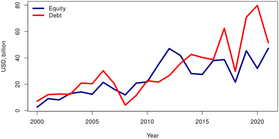</p> </div> Note: The first alternative is the pecking order theory. The idea is that firms have a favourite order for raising money. First, their own cash. Then debt. And new equity only as a last resort. Why? Because managers know more than outside investors. If a company issues new shares, investors wonder whether management thinks the shares are overpriced. So raising equity gets expensive. And real estate eats up a lot of capital, so a growing property company can never fund itself from its own cash alone. This chart shows how much US REITs raised through secondary offerings. Equity's in blue, debt's in red. The boom in the 2000s ran on debt. During and after the crisis, REITs switched to equity. And then in the late 2010s, it was mostly debt again. That switch to equity doesn't really fit a strict pecking order. Maybe REITs had simply run out of room to borrow and had to raise equity to fix their balance sheets. Or maybe equity just looked like the better deal at the time. We'll come back to that. First, let's see what the pecking order looks like inside one company.
## Example: American Tower<span class="subtitle"><br>One of the largest global REITs: growth largely financed with long-term debt</span> * Owner/operator of communications sites (towers, data centres); aggressive expansion in 2021 <p>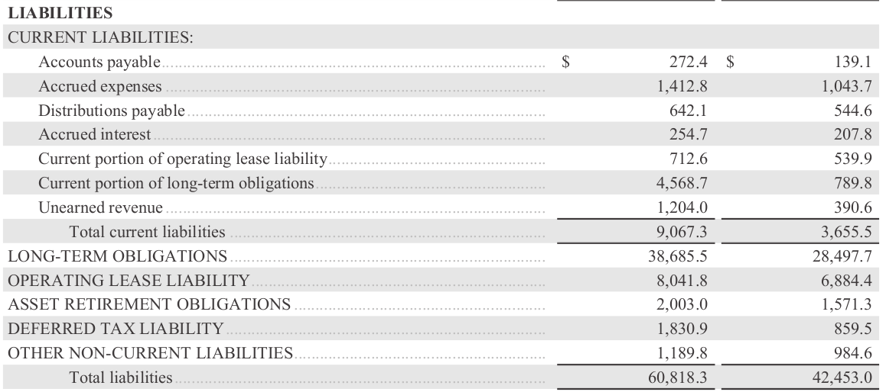</p> Note: Let's look at one company. American Tower is one of the biggest REITs in the world. And it doesn't own offices or shopping centres. It owns phone masts, and more and more, data centres. In 2021 it went on a big buying spree. This is the liabilities side of its balance sheet. Total liabilities went from about 42 billion to about 61 billion US dollars in one year. And most of that increase is long-term debt.
## Example: American Tower<span class="subtitle"><br>How did American Tower finance expansion?</span> * Few secondary equity offerings 2012–2022; debt raised frequently—pecking order in action? <p>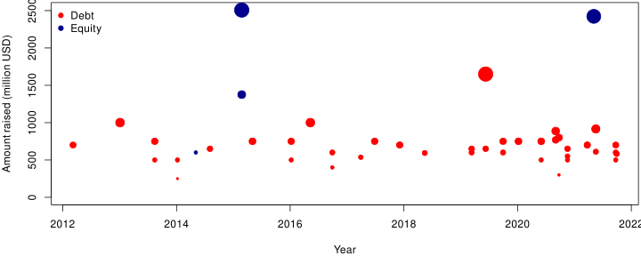</p> Note: And here's how American Tower raised money over ten years, from 2012 to 2022. Red dots are debt, blue dots are equity, and the bigger the dot, the more they raised. The pattern's pretty clear. They raise debt all the time, year after year, usually half a billion to a billion dollars at a go. Equity is rare. Just a few big issues, around 2015 and again in 2021, when they needed to pay for big acquisitions. That looks a lot like the pecking order. Debt is the default, and equity only comes in when they run out of room to borrow.
## Geared Positions<span class="subtitle"><br>“Losing interest: how rising rates hit towers and data centre groups” (<a href="https://www.ft.com/content/82b29ff2-7398-4151-8823-8f04db25fab0">FT.com</a>)</span> * The flip side: debt-financed growth looks cheap until rates rise * The relative cost of debt and equity changes over time—so should firms try to time it? <div class="figure"> <p>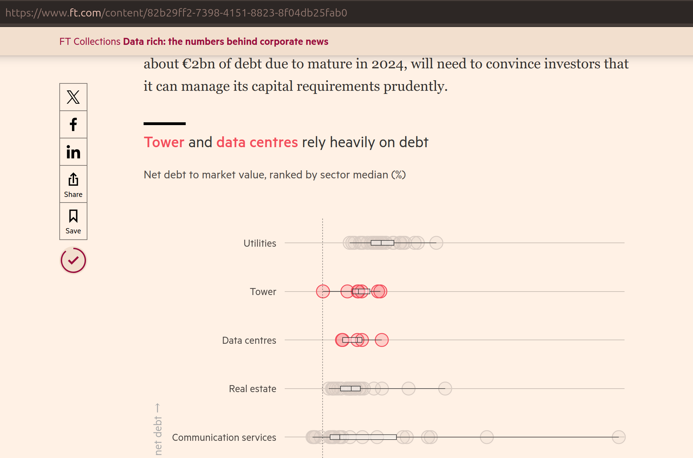</p> </div> Note: But there's a catch. This is from a piece in the Financial Times called 'Losing interest: how rising rates hit towers and data centre groups'. It compares net debt to market value across sectors, and towers and data centres are right up there among the most indebted. When interest rates were close to zero, funding growth with debt looked cheap. Then rates went up from 2022. Refinancing got more expensive, valuations came under pressure, and the same debt that had boosted returns now made the losses bigger. It's basically the first half of today's session, but at the level of the whole company. And here's the thing. Debt was cheap at one point and expensive a few years later. The same goes for equity: sometimes your shares are flying, sometimes they're in the doldrums. So the cost of each source of money keeps changing. Shouldn't a smart firm pick whichever is cheaper at the time? That's exactly what our next theory says.
## Market Timing Theory<span class="subtitle"><br>“Catch of the day?”</span> * Raise capital from whichever source looks cheapest now: sell equity when prices are high, buy back in a slump (implies market inefficiency) * Baker & Wurgler (2002): past market-to-book strongly predicts current leverage—high M/B → <em>less</em> debt <div class="figure"> <p>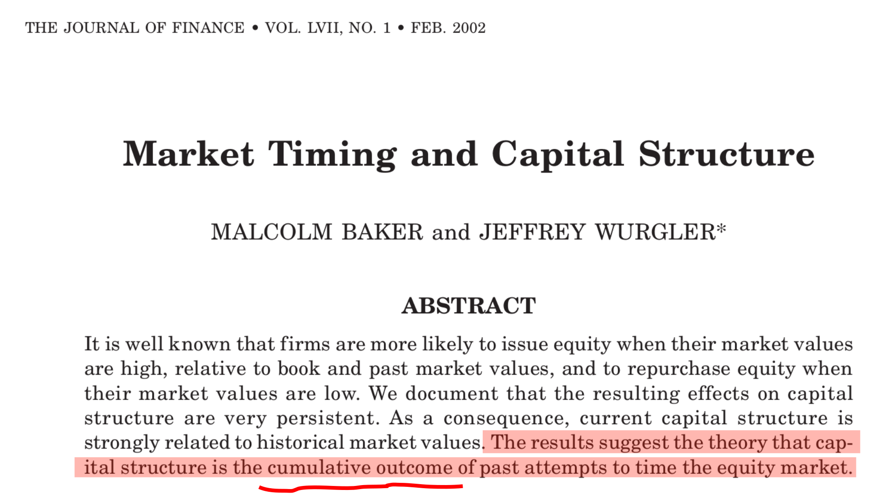</p> </div> * For REITs, a candidate mispricing signal: the NAV premium/discount (next)—issue at a premium, buy back at a discount Note: Market timing says firms don't follow a fixed order at all. They raise money wherever it looks cheapest right now. Share price is high? Issue shares. Share price is low? Buy shares back and borrow instead. And remember that swing to equity after the crisis, the one that didn't fit the pecking order? This is one way to explain it. For that to work, markets have to be at least a bit inefficient. Otherwise there'd be nothing to time. Baker and Wurgler looked at this in 2002. They found that a firm's past market-to-book ratio is a strong predictor of how much debt it has today. Firms whose shares were expensive in the past have less debt now, because that's when they issued equity. And their conclusion is pretty striking. Capital structure is basically the sum of all the past attempts to time the stock market. But market timing only works if share prices really do drift away from what the company is worth. And for REITs, there's a really clear signal we can check: the NAV premium or discount. If the shares trade above NAV, you can issue new shares, buy property with the money, and your existing shareholders are better off. If they trade below NAV, it's the other way round, and buying back shares is the better deal. So let's look at NAV properly.
## Net Asset Value<span class="subtitle"><br/>An accountant’s view of value.</span> * For companies, the equity holders own the residual value - The value of all assets less value of the debt - Less any other stakeholder claims (e.g. tax) - Less any costs of disposal * This is the Net Asset Value (NAV) of the firm - Shouldn’t NAV per share be the share price? - What would happen if it weren’t? * Luckily, property companies/REITs have a high percentage of fixed tangible assets, so NAV should be easy to calculate? Note: For a property company, there's an obvious yardstick for what the shares should be worth: net asset value, or NAV. Take the value of everything the company owns. Take off the debt, any other claims like tax, and the costs of selling. Whatever's left belongs to the shareholders. Divide by the number of shares, and that's NAV per share. So shouldn't the share price just equal NAV per share? And if it didn't, what would happen? If the shares were trading below NAV, you could in theory buy the whole company, sell the buildings, and pocket the difference. And for property companies, NAV should be easy to work out, right? Most of what they own is buildings, and buildings get valued all the time. Let's see how that works out in practice.
## NAV discounts: UK <span class="subtitle"><br/>Historically, UK property companies have traded at NAV discount.</span> * Discount (Premium) = (Price - NAV) / NAV - e.g. NAV = 300, Price = 225: (225-300)/300 = -25%<br> <p>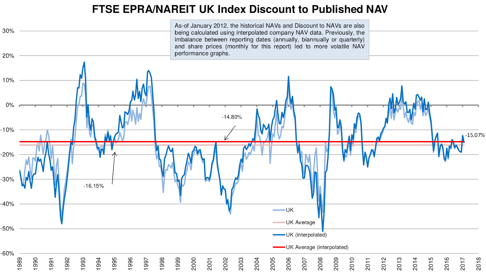</p> Note: The NAV discount, or premium, is just the share price minus NAV, divided by NAV. So if NAV is 300 pence and the shares trade at 225, that's a 25 percent discount. This chart shows UK listed property companies from the late 80s to 2018. What really stands out is that they've traded below NAV most of the time. The long-run average, that red line, is a discount of about 15 percent. Only in a few boom periods did the shares trade at a premium. And at the worst points, in the early 90s and in the financial crisis, the discount got as big as about 50 percent.
## Potential causes<span class="subtitle"><br/>We do not have a good explanation, yet.</span> * What could lead to these deviations? - Tax - particularly capital gains tax - liability (but REITs do not pay tax) - Uncertainty as to true NAV - Minority holdings & control, management costs - Liquidity and loss on forced sale - Risk: gearing and volatility; innovative capital structure - Pricing inefficiencies? Is the market off? * Either way: there is a moving gap to exploit. Do REITs actually exploit it? Note: So why would a company trade below the value of what it owns, year after year? Nobody has a single, agreed answer. But there are a few suspects. Tax. For a property company that isn't a REIT, selling a building triggers capital gains tax. So NAV overstates what shareholders would actually get. That doesn't apply to REITs, though. Uncertainty about the real NAV. Valuations are estimates, and the market may not fully trust them. Control. As an ordinary shareholder, you can't force the company to sell the buildings, and you're paying for management along the way. Liquidity. If you had to sell in a hurry, you wouldn't get the full valuation. Risk. Gearing, volatility and complicated capital structures make the shares riskier than the buildings themselves. And finally, maybe the market's just got it wrong. Whatever the cause, the gap is big and it moves around a lot. So there's clearly something a smart manager could exploit: issue shares at a premium, buy them back at a discount. The question is whether REITs actually do that.
## Testing 3 Theories<span class="subtitle"><br>Can market-to-book explain REIT capital structure?</span> * <a href="https://doi.org/10.1007/s11146-007-9005-2">Feng et al. (2007)</a> test all three on the same data, using market-to-book (M/B): - Trade-off: no long-run relation between M/B and leverage—REITs gravitate to their optimum regardless - Pecking order: persistent <em>positive</em> relation—growing REITs exhaust internal funds, then borrow - Market timing: persistent <em>negative</em> relation—high equity value, so sell equity * Data: US REITs that went public 1991–2003, followed year by year after their IPO Note: So now we've got three theories. Can we test them against each other? Feng, Ghosh and Sirmans did exactly that for US REITs, in 2007, using the market-to-book ratio. That's basically the share price relative to the book value of the company, a cousin of the NAV premium we just looked at. Each theory predicts something different. Trade-off says there's no link between market-to-book and leverage in the long run. Firms just drift back to their target, whatever their share price. Pecking order says there should be a lasting positive link. Fast-growing firms with high market-to-book run out of their own cash and borrow. And market timing says there should be a lasting negative link. When the shares are expensive, firms issue equity, so leverage goes down. They followed US REITs that went public between 1991 and 2003, year by year after the IPO. So what did they find?
## What Feng et al. Found<span class="subtitle"><br>REITs borrow when their shares are expensive</span> * No drift back to a target leverage → against trade-off * High past M/B → persistently <em>high</em> leverage: valuation-driven changes come through debt issues, not equity → against market timing (the opposite of Baker & Wurgler’s non-REIT firms) * Not a clean pecking order either: the 90% payout leaves little retained earnings, so REITs lack a free choice of funding sources * Average debt ratio above 65% ten years after IPO—despite no tax benefit. A puzzle; one suggested motive: debt as a monitoring device * Caveat: small sample (only 13 REITs with complete data for all ten years) Note: So what did they find? First, there's no sign of REITs drifting back towards some target leverage. That's bad news for the trade-off theory. Second, and this is the big one: REITs that have had a high market-to-book ratio in the past end up with persistently high leverage. So when their shares are expensive, the extra money comes mainly through debt. Older REITs do issue some shares when valuations are high, but they issue debt alongside, so leverage doesn't come down. That's exactly the opposite of what market timing predicts, and the opposite of what Baker and Wurgler found for ordinary companies. So, remember those NAV premiums we just saw? REITs don't really use them the way market timing says they should. Third, it's not a clean pecking order story either. Because of the 90 percent payout rule, REITs hardly have any retained earnings. So they don't really get to choose freely between their own cash, debt and equity. And the level of debt is striking. Their REITs had average debt ratios of over 65 percent ten years after their IPO, with no tax reason to borrow at all. The authors call it a puzzle. One idea they float is monitoring: having to pay interest every year keeps management on a tight leash, and that matters in a sector where hostile takeovers are rare. One caveat, though. It's a small sample. Only 13 REITs have complete data for all ten years after their IPO. So treat this as a strong hint, not the final word.
## Summing Up<span class="subtitle"><br>Capital structure: is real estate different?</span> * Asset level: debt amplifies return <em>and</em> risk by the same factor—no free lunch. How debt is structured decides whether you survive a downturn (EOP). * Entity level: tax shield vs. costs of financial distress and agency conflicts (trade-off theory) * REITs: no tax shield, even a tax disadvantage to debt—yet they borrow, and leverage moves with the cycle * Pecking order and market timing help explain what trade-off can’t. NAV discounts show there is mispricing to exploit—yet highly valued REITs end up with more debt, not less (Feng et al.) Note: OK, let's pull it all together. At the level of a single building, debt pushes up return and risk by roughly the same amount. There's no free lunch. And how you structure the debt, so maturities, covenants, cash reserves, can decide whether you survive a downturn. Equity Office showed us that. At the level of the company, the trade-off theory weighs the tax shield against the costs of financial trouble and those conflicts between shareholders and lenders. For REITs, that trade-off falls apart. There's no tax shield. If anything, debt is at a tax disadvantage. And yet REITs do borrow, and their leverage goes up and down with the cycle. The pecking order and market timing help explain what the trade-off theory can't. And NAV discounts show there's plenty of mispricing a REIT could exploit. But when Feng and colleagues looked, REITs with expensive shares ended up with more debt, not less. There's no single theory that explains real estate capital structure, and that's why people are still researching it.
## Further Reading<span class="subtitle"><br/>Book chapters & papers referenced in this session</span> * <strong>Book:</strong> Geltner, Miller, Van de Minne, Eichholtz, Lindenthal & Shen, <a href="https://www.routledge.com/Commercial-Real-Estate-Analysis-for-Investment-Finance-and-Development/Geltner-Miller-VanDeMinne-Eichholtz-Lindenthal-Shen/p/book/9781041076391"><em>Commercial Real Estate Analysis for Investment, Finance, and Development</em></a> (4th ed., 2026) — Ch. 12 (Use of Debt in Real Estate Investment: The Effect of Leverage), Ch. 15 (Capital Structure: Advanced Topics II), Ch. 26 (Real Estate Investment Trusts) * Baker, M. & Wurgler, J. (2002). <a href="https://doi.org/10.1111/1540-6261.00414">Market Timing and Capital Structure</a>. <em>Journal of Finance</em>. * Feng, Z., Ghosh, C. & Sirmans, C.F. (2007). <a href="https://doi.org/10.1007/s11146-007-9005-2">On the Capital Structure of REITs</a>. <em>Journal of Real Estate Finance and Economics</em>. * Howe, J.S. & Shilling, J.D. (1988). <a href="https://doi.org/10.1111/j.1540-6261.1988.tb02616.x">Capital Structure Theory and REIT Security Offerings</a>. <em>Journal of Finance</em>. Note: If you'd like to dig deeper, chapters 12 and 15 in Geltner and colleagues go through leverage and capital structure in detail, and chapter 26 is all about REITs. For papers, Howe and Shilling is the classic on REITs, debt and tax. Feng, Ghosh and Sirmans test the three theories on REIT data. And Baker and Wurgler is the go-to paper on market timing. After this slide there are a few extra slides on NAV discounts, if you'd like some more background. But that's it for today. Thanks for watching.
## Simplified example<span class="subtitle"><br/>NAV and property companies (adapted from Brett, “Property and Money”)</span> <div class="figure"> <p>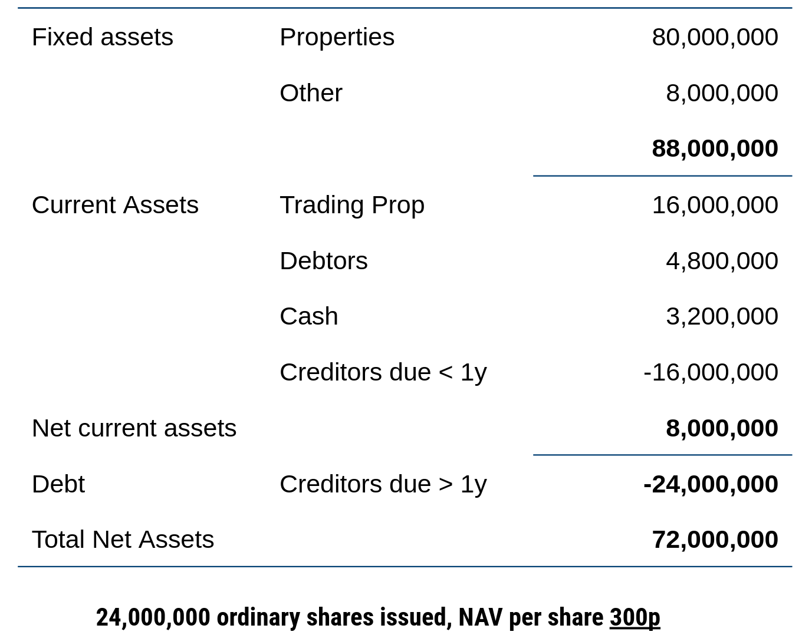</p> </div> Note: Here's a simple example of how you build up a property company's NAV. It's adapted from Brett's book, Property and Money. You've got 88 million pounds of fixed assets, mostly investment property. Then 8 million of net current assets: trading property, debtors and cash, minus short-term creditors. Take off 24 million of long-term debt, and you're left with 72 million of net assets. There are 24 million shares, so NAV is 300 pence a share. And that's the number you compare the share price with.
## Caused by smoothness?<span class="subtitle"><br/>NAV: Always one step behind? And smooth!</span> * Recall Session 3: appraisal-based values lag and smooth the market * Can this explain structural NAV discounts? No. <p>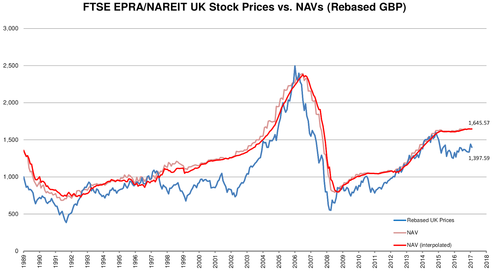</p> Note: One tempting explanation for NAV discounts is valuation smoothing, which we talked about in Session 3. NAVs are based on valuations, and valuations lag behind the market and smooth it out. This chart shows UK property share prices in blue, against NAVs in red. You can really see the lag around 2007. Share prices turned first and fell further, and NAVs caught up later. So smoothing explains why the discount moves around over the cycle. But it can't explain a discount that sticks around on average for decades. If NAVs were just lagging, you'd expect the shares to trade at a premium about as often as at a discount.
## Geographic diversity<span class="subtitle"><br/>NAV discounts/premia in Europe</span> * Is this a regulation story? Or valuation differences? <p>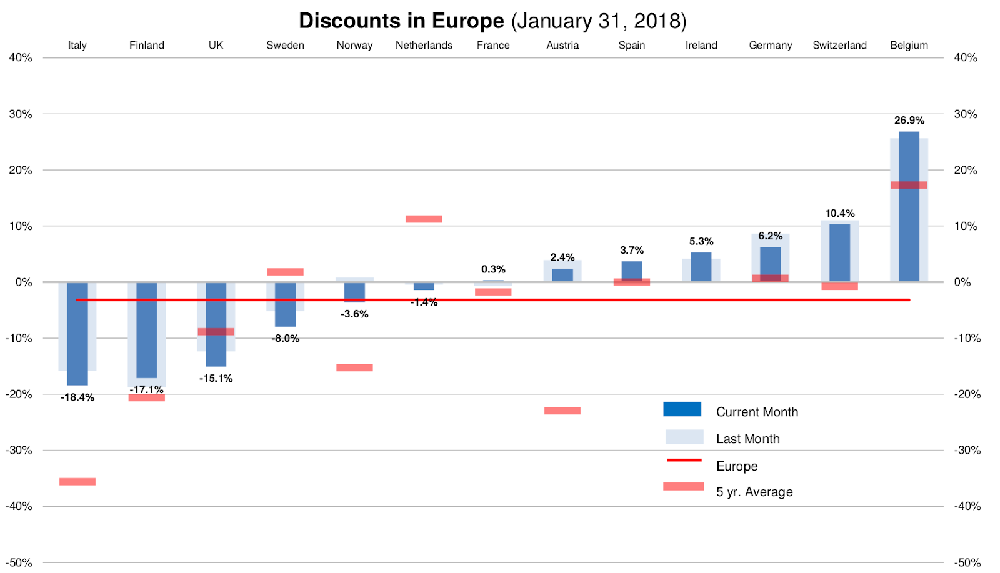</p> Note: And it's not just a UK thing. NAV discounts vary a lot across Europe. This is a snapshot from January 2018. Italian, Finnish and UK property companies were trading at discounts of about 15 to 20 percent. At the other end, Swiss and Belgian companies were at a premium, and Belgium at more than 25 percent. So is that about regulation, different REIT rules and different tax? Or is it about how buildings get valued in each country? Probably a bit of both.
## Time Dynamics<span class="subtitle"><br/>Shared turning points and trends. Distinct country-specific trends.</span> * Ranking by NAV discount not constant. <p>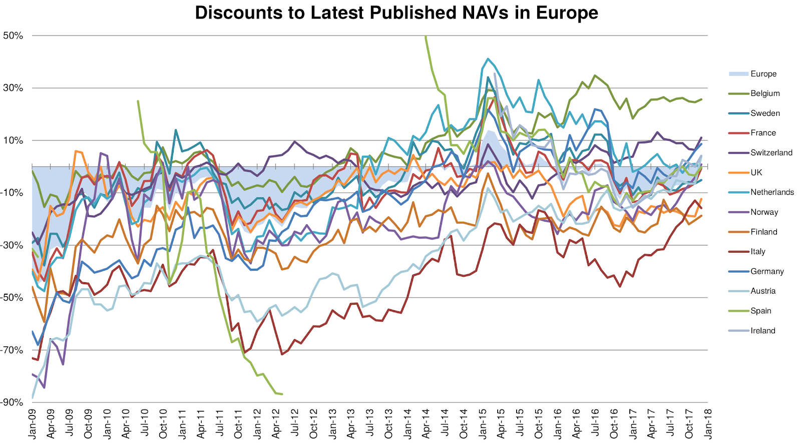</p> Note: And the ranking doesn't stay put. This chart follows the discount in each European country from 2009 to early 2018. There are some shared turning points. Everyone came out of the crisis together. But there are clearly country-specific trends too. Some markets went from deep discounts to premiums, others stayed at a discount the whole time. So whatever drives NAV discounts, it's not just one fixed thing about each country.